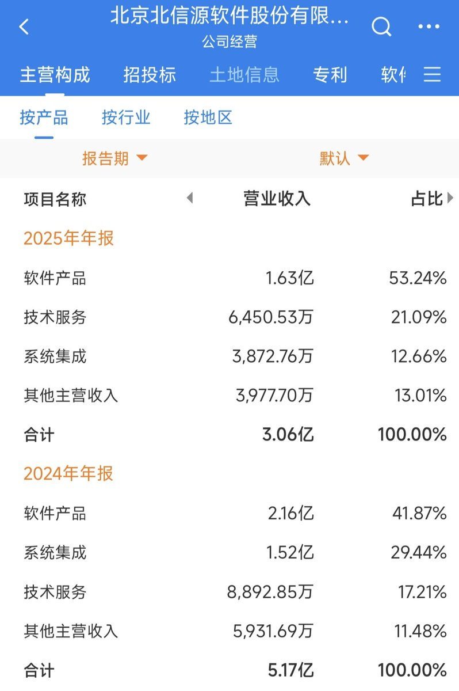
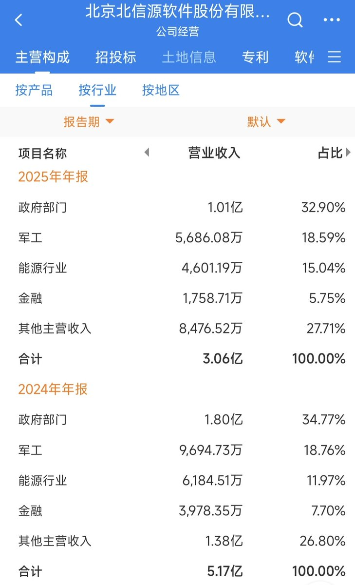

洛铃🦊Magic Caster
@LolingVerse
@zako_Peko @CyberKanjousen 上市公司年营收个位数，确实捉襟见肘了


zako_Peko
@zako_Peko
@CyberKanjousen @LolingVerse 这是一家目前已经有点落寞的A股上市公司，近年来主要是为政府部门和军工、能源企业提供杀毒产品和相关的技术服务。不过，2025年，公司内部审计报告被出具了否定意见，而且营收额和股价都遭遇了大跌，被实施了ST风险警示，目前经营状况有点捉襟见肘了。 https://t.co/R3RMkttjIY